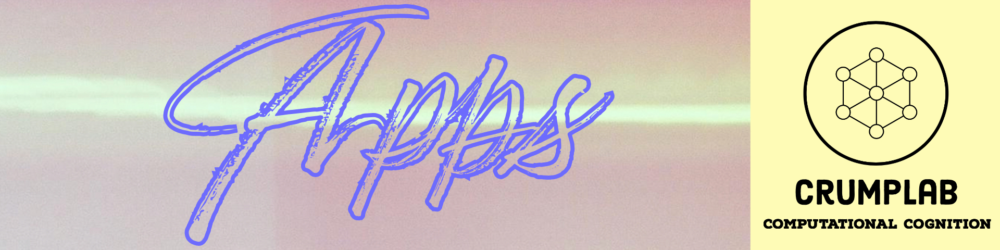

~/crumplab/apps
Apps
Shiny Apps, R packages, and various things
18 projects 2 audio plugins 8 R packages 5 shiny apps 3 R markdown templates
┌─ software18
An experimental audio effect (AU / VST3 for macOS) that treats Hintzman’s MINERVA II multiple-trace memory model as a tape echo.
An experimental synthesizer (VST3 for macOS) built on a principal components analysis of wav files.

This is the beginnings of an #rstats package for experimental mangling of #MIDI files.
Addins and shiny app for sending text to LLMs at OpenAI. The addins are focused on writing assistance tools. The shiny app has a grammar checker. This is an experimental package for personal use that may be helpful as a reference for others to build their own similar tools.
R-studio project template and workflow for sharing psychological research projects in the form of a website.
R functions for creating semantic librarians, a tool for vectorizing and visualizing semantic spaces from text
Functions for detecting textual overlap (e.g., possible plagiarism) between documents
Monte-carlo based power analysis for cognitive control designs.
A few functions used around the lab. Contains functions for the Van Selst and Jolicoeur outlier procedure.
A semantic search engine for the APA abstract database (most of the Experimental journals from 1890s to 2016), formerly known as ATHENA.
We (Harinder Aujla, Randy Jamieson, and Matthew Crump) use semantic vectors from BEAGLE (Jones & Mewhort, 2007) to compute the similarity between abstracts, and authors, and authors and abstracts.
Publication: In press at Behavioral Research Methods.
A Shiny App for viewing annotations from the Hypothes.is database. Need to download and run locally.
A simple experiment simulator with monte-carlo power analysis
A bookdown theme reproducing the style of “A Pattern Language”.
No matches.